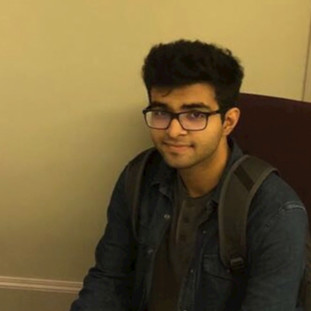
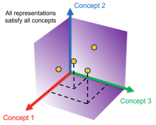
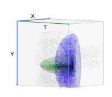
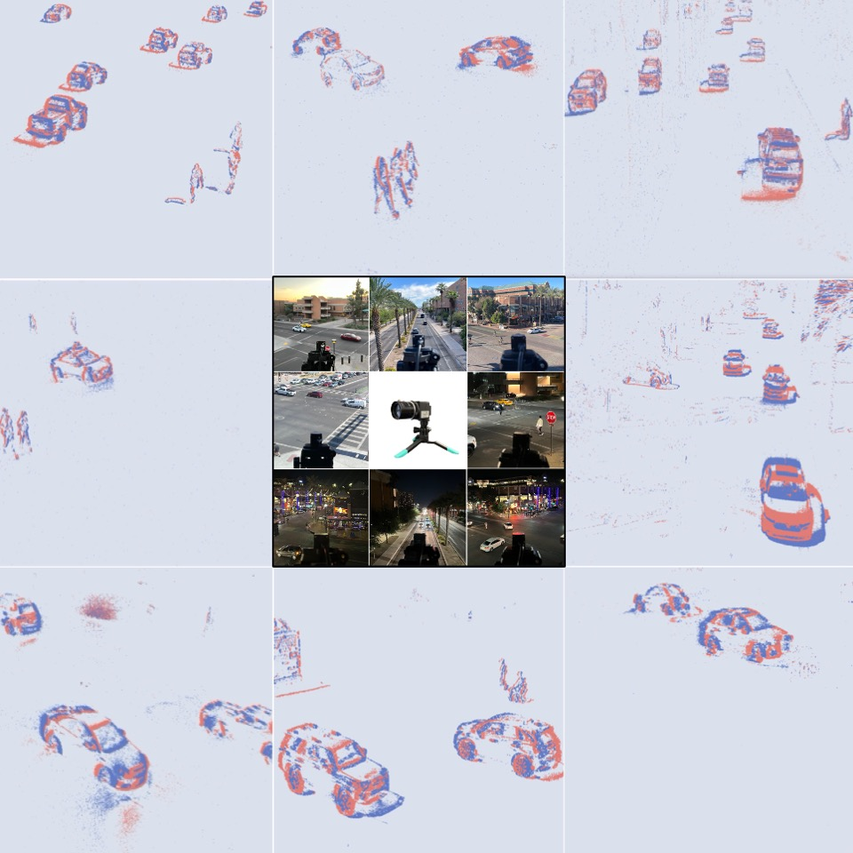
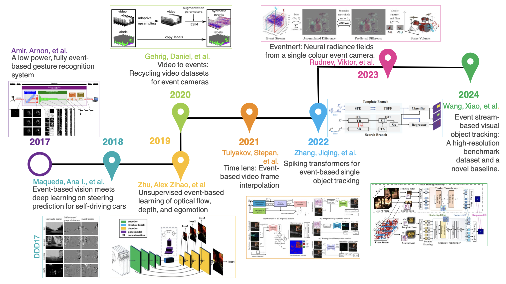
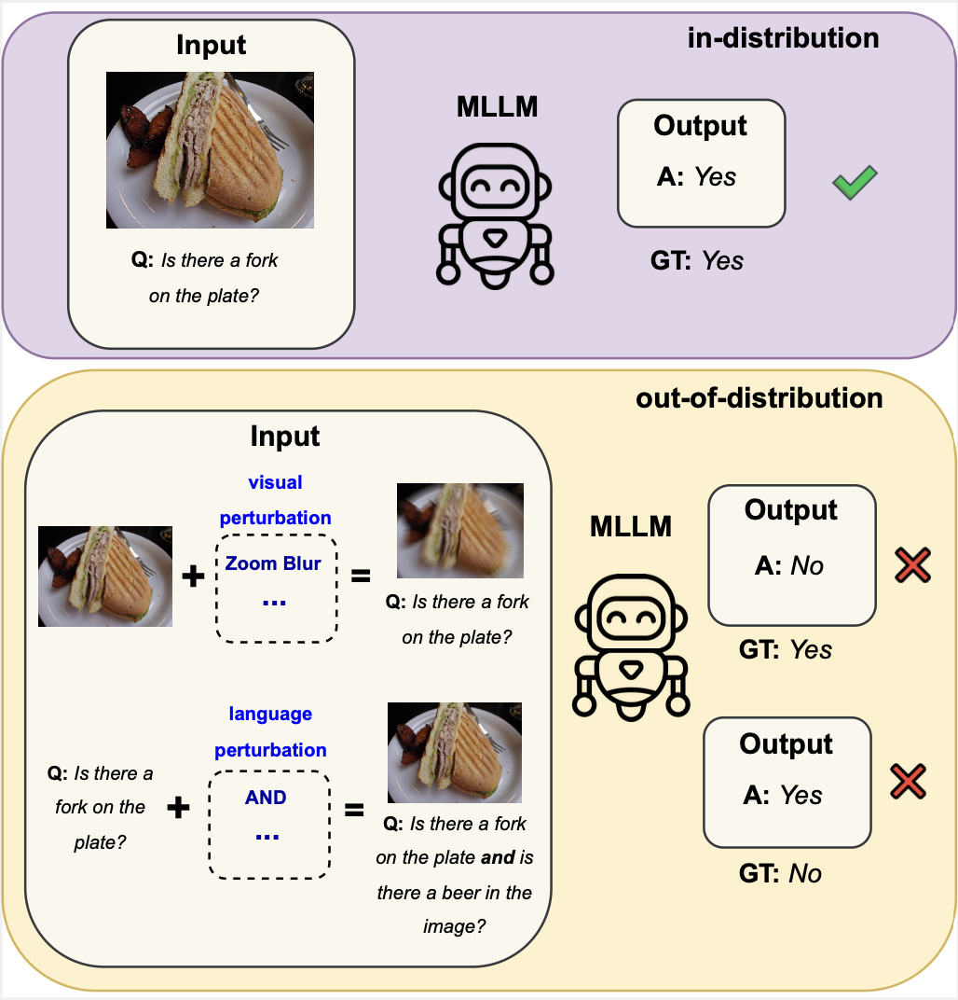

I am a PhD student in the Active Perception Group at Arizona State University, advised by Dr. Yezhou Yang. My research focuses on the foundations of generative modeling, particularly how to make generative processes more efficient, adaptive, and responsive to the task. I'm interested in questions around sampling, computation allocation, and the role of time and sparsity in generation. My earlier research on asynchronous perception shapes how I think about these problems.
Prior to my PhD, I earned a Master's in Computer Science at Arizona State University in 2024, and a Bachelor's in Computer Science at Birla Institute of Technology and Science, Pilani (BITS Pilani) in 2021. In Summer 2025, I interned at Analog Garage (Analog Devices), where I worked on efficient neural computation across spiking, graph, and conventional vision networks.




